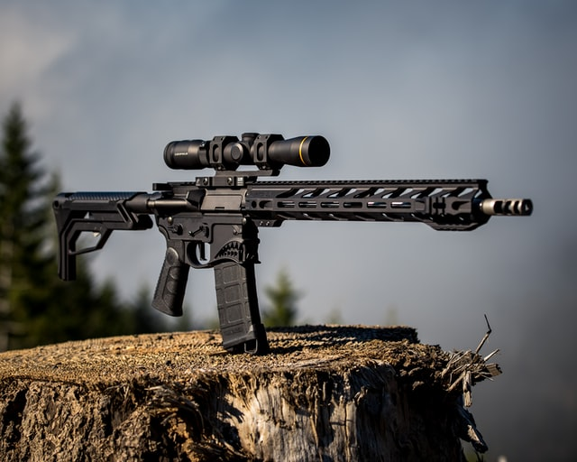
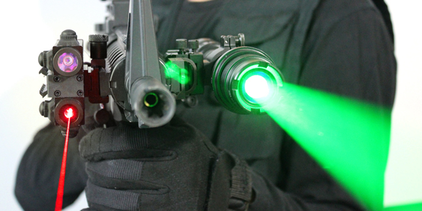
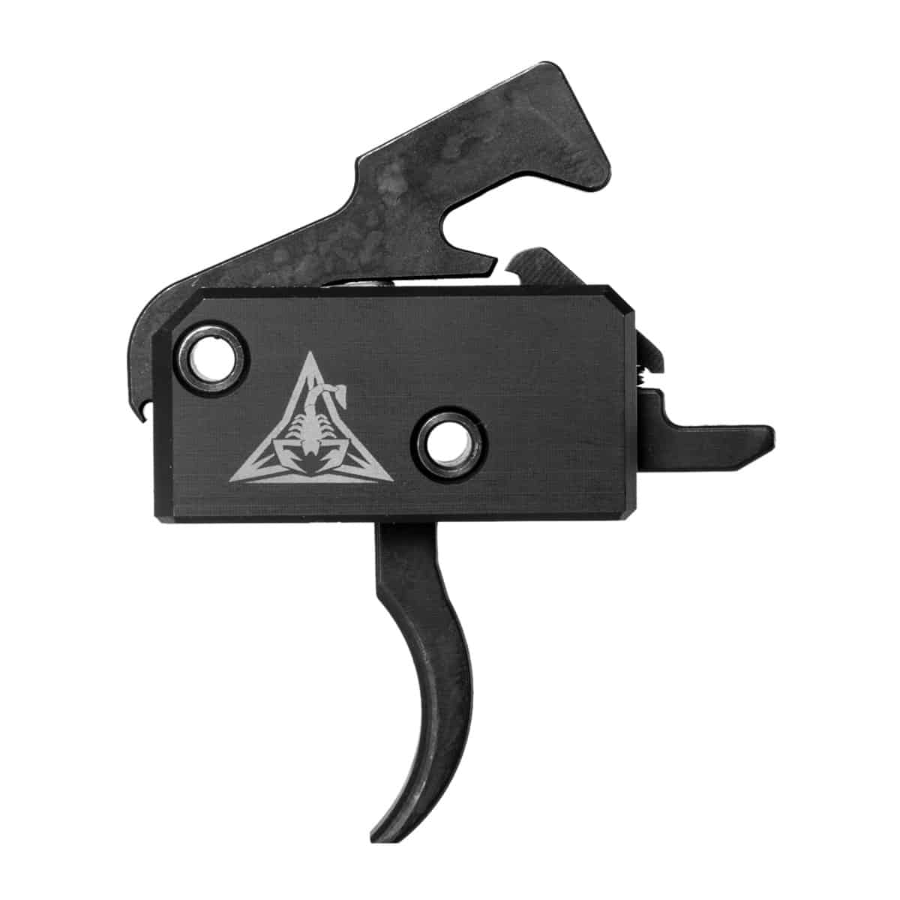
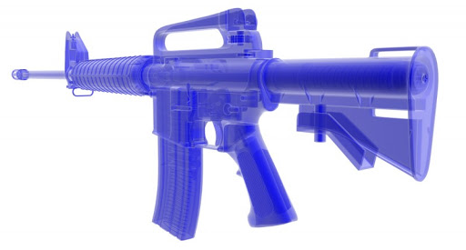

Terminology
In 1973 Colt AR-15 SP1 rifle with 'slab side' lower receiver (lacking raised boss around magazine release
button)
and original Colt 20-round box magazine
In 1956, ArmaLite designed a lightweight selective fire rifle for military use and designated it the
ArmaLite
Rifle model 15, or AR-15. Due to financial problems and limitations in terms of manpower and production
capacity, ArmaLite sold the design and the AR-15 trademark along with the ArmaLite AR-10 to Colt's
Manufacturing
Company in 1959 In 1964, Colt began selling its own version with an improved semi-automatic design known as
the Colt AR-15 After Colt's patents expired in 1977, an active marketplace emerged for other manufacturers
to produce and sell their own semi-automatic AR-15 style rifles. Some versions of the AR-15 were classified
as "assault weapons" and banned under the Public Safety and Recreational Firearms Use Protection Act in
1994.
This act expired in 2004.

In 2009, the term "modern sporting rifle" was coined by the National Shooting Sports Foundation for its
survey
that year as a marketing term used by the firearms industry to describe modular semi-automatic rifles
including
AR-15s. Today, nearly every major firearm manufacturer produces its own generic AR-15 style
rifle. As Colt continues to own and use the AR-15 trademark for its line of AR-15 variants, other
manufacturers must use their own model numbers and names to market their AR-15 style rifles for commercial
sale.
Modularity
While most earlier breech-loading rifles had a single receiver housing both the trigger and reloading
mechanism,
an innovative feature of the AR-15 was modular construction to simplify substitution of parts and avoid need
for
arsenal facilities for most repairs of malfunctioning military rifles. A distinctive two-part receiver is
used by both military and sporting AR-15 style rifles. As civilian ownership of AR-15 style rifles became
sufficient to create a market for improvements, numerous manufacturers began producing one or more
"improved"
modules, assemblies, or parts with features not found on factory rifles; and individuals with average
mechanical
aptitude can often substitute these pieces for original equipment. Due to the vast assortment of aftermarket
parts and accessories available, AR-15 style rifles have also been referred to as "the Swiss Army knife of
rifles," "Barbie Dolls for Guys," or "LEGOs" (sic) for adults. These more or less
interchangeable modules are a defining characteristic of AR-15 style rifles.

A stripped lower receiver, one that is lacking the additional parts included in a completed lower receiver,
is
the only part of an AR-15 style rifle that needs to be transferred through a federally licensed firearms
dealer
under United States federal law.
The lower receiver is the serial-numbered part legally defined as the firearm under United States law.
However,
this definition is currently questionable due to a 2019 court ruling that the AR-15 lower receiver does not
match the legal definition in 27 CFR § 479.11. A completed lower receiver is visually distinguished by the
trigger guard ahead of the detachable pistol grip, and behind the magazine well capable of holding
detachable
magazines. The lower receiver holds the trigger assembly including the hammer, and is the attachment point
for
the buttstock. The lower receiver is attached to the upper receiver by two removable pins. Disassembly for
cleaning or repair of malfunctions often requires the removal of these pins. Removal of the rear take-down
pin
allows the receiver to be opened by rotation around the forward pivot pin as a hinge.

The upper receiver contains the bolt carrier assembly and is attached to the barrel assembly. Sights will be
attached to the upper receiver or the barrel assembly. A handguard usually encloses the barrel and a
gas-operated reloading device using burnt powder gas vented from a hole (or port) in the barrel near the
forward
end of the handguard. The handguard is attached to the upper receiver and may also be attached to the
barrel.

The initial design included a tube to vent burnt powder gas back into the bolt carrier assembly where it
expands
in a variable volume chamber forcing the bolt open to eject the spent cartridge case. A buffer spring in the
buttstock then pushes the bolt closed picking up a new cartridge from the magazine. This direct gas
impingement
(DGI) system has the disadvantage of venting un-burned smokeless powder residue into the receiver where it
may
ultimately accumulate in quantities causing malfunctions. A more recent alternative design has a metal
operating
rod pushing against the bolt carrier from a gas piston under the handguard near the barrel port. This piston
keeps the receiver cleaner by exhausting under the handguard. While both the DGI and piston systems produce
semi-automatic fire, an alternative un-ported barrel assembly includes a sliding handguard connected to a
rod
moving the bolt by a pump action and eliminating semi-automatic fire.

Most rifles eject spent cartridges from the right side of the receiver away from right handed shooters who
place
the butt against the right shoulder while sighting with the right eye and using a finger of the right hand
to
pull the trigger. Right-side ejection is a disadvantage for the third of the population whose left eye is
dominant, and for the tenth of the population who are left handed, because holding these rifles against
their left shoulder for maximum accuracy causes the rifle to eject hot spent cases toward the chest, neck or
face of a left handed shooter. The modular design of AR-15 style rifles has encouraged several manufacturers
to offer specialized parts including leftward ejecting upper receivers for converting right handed AR-15
style
rifles for left handed use.
Some AR-15-style rifles have features limiting use of detachable magazines to comply with state
regulations. A few unusual versions are incapable of semi-automatic fire. Nearly all versions of
the civilian AR-15 have a pistol grip like the military versions, and some have folding or collapsible
stocks
like the M4 carbine which reduce the overall length of the rifle.